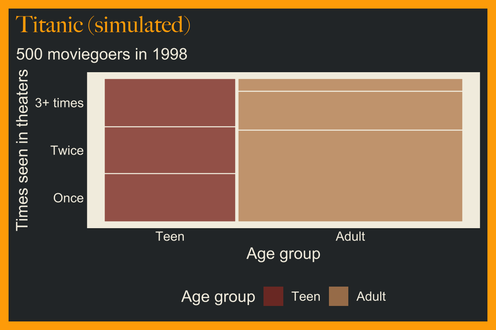
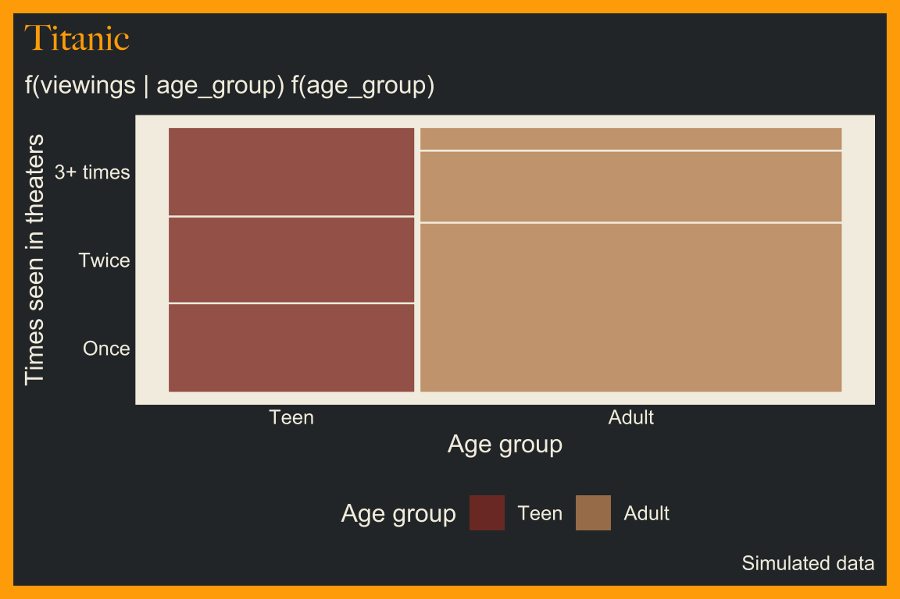
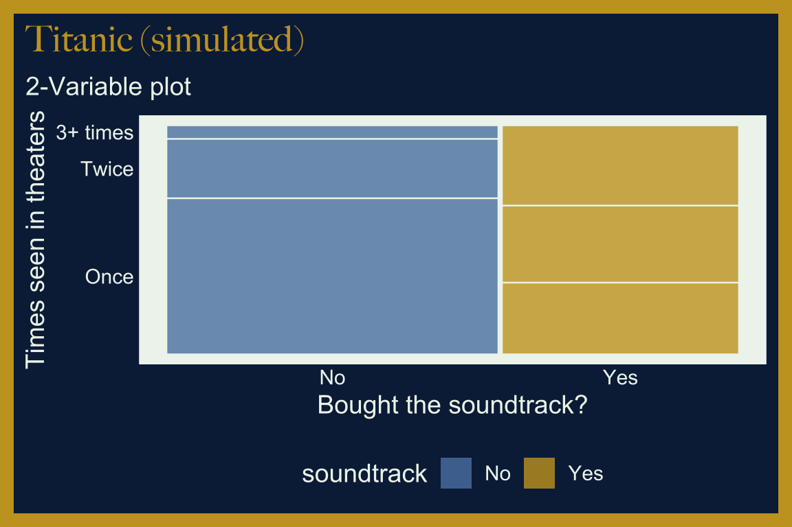
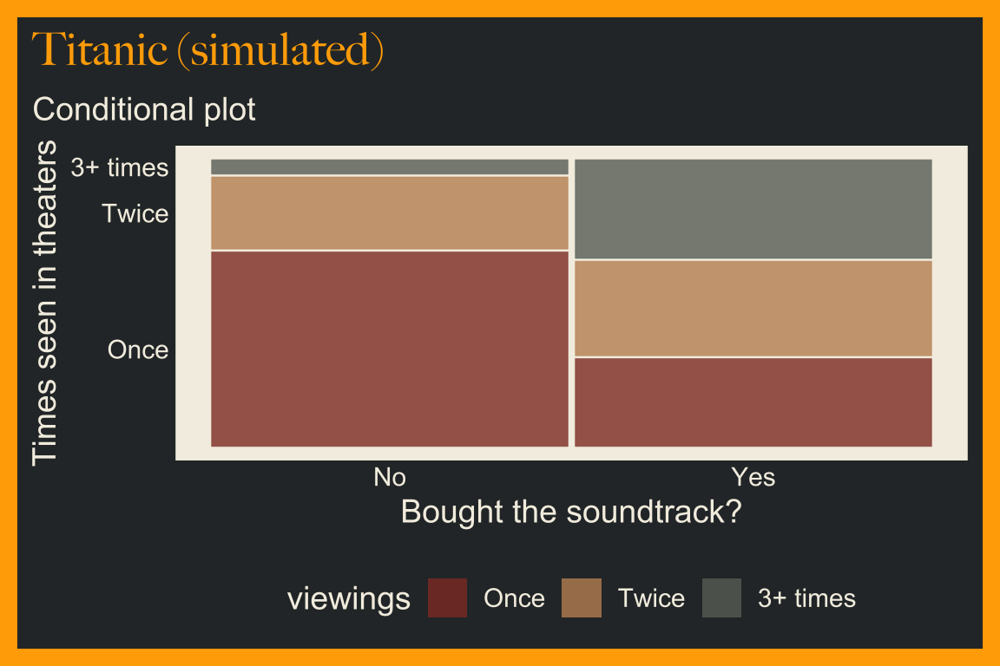
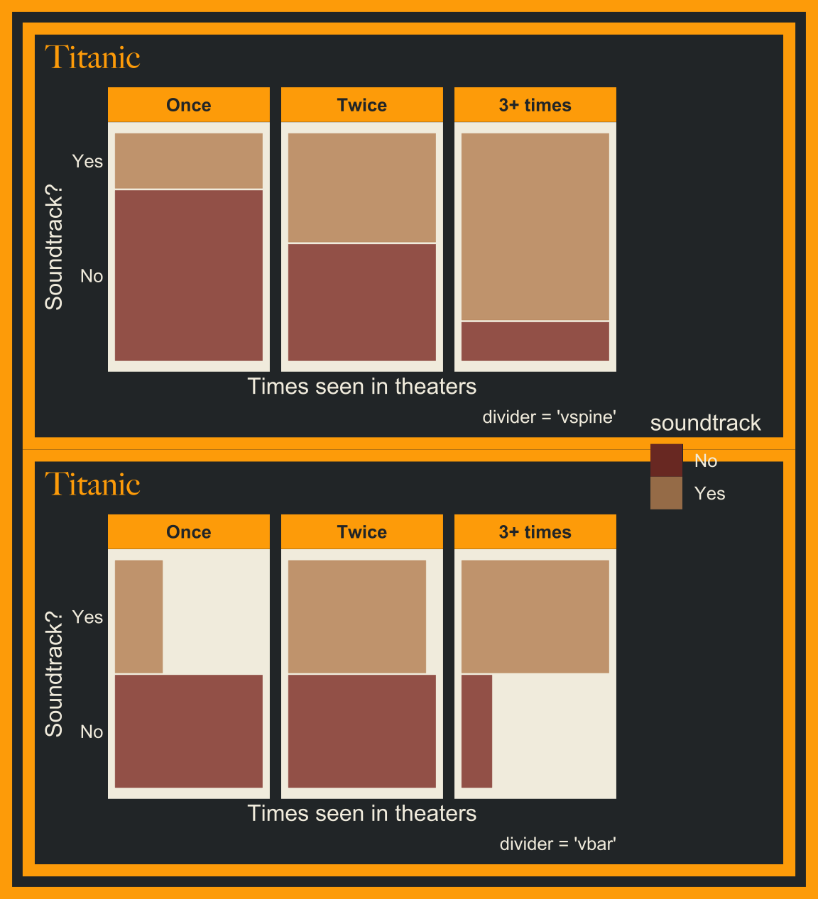
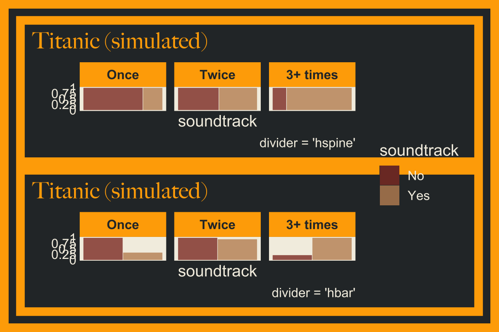

16 Mosaic plots
16.1 Description
A mosaic plot is similar to a stacked bar graph, but instead of only relying on height and color to display the relative amount for each value, mosaic plots also use width.
Mosaic plot legends should be positioned on top or bottom and justified horizontally to preserve shape and improve readability.
We can build mosaic plots using the ggmosaic package.
16.2 Set up
PACKAGES:
Install packages.
show/hide
# pak::pak("haleyjeppson/ggmosaic")
library(ggmosaic)
library(ggplot2)
library(dplyr) # for tibble() and data manipulationDATA:
Titanic (1997) stayed in theaters for months, and plenty of fans (especially teenagers) went back to see it again and again. We’ll simulate 500 moviegoers in three linked steps. First, sample() decides each fan’s age_group. Next, each age group gets its own chances of seeing the movie once, twice, or three or more times (viewings). Finally, the more times a fan saw the movie, the more likely they were to buy the soundtrack (soundtrack), so runif() draws a number between 0 and 1 and compares it to the chance for that fan’s number of viewings. Setting the seed with set.seed() means you’ll get the same 500 fans every time you run the code below.
show/hide
set.seed(1997)
titanic_fans <- tibble(
fan_id = 1:500,
age_group = sample(c("Teen", "Adult"), 500, replace = TRUE,
prob = c(0.4, 0.6))) |>
mutate(
viewings = if_else(age_group == "Teen",
sample(c("Once", "Twice", "3+ times"), n(), replace = TRUE,
prob = c(0.35, 0.35, 0.30)),
sample(c("Once", "Twice", "3+ times"), n(), replace = TRUE,
prob = c(0.70, 0.22, 0.08))),
soundtrack = if_else(
runif(n()) < c(Once = 0.25, Twice = 0.50, `3+ times` = 0.80)[viewings],
"Yes", "No"),
age_group = factor(age_group, levels = c("Teen", "Adult")),
viewings = factor(viewings, levels = c("Once", "Twice", "3+ times")),
soundtrack = factor(soundtrack, levels = c("No", "Yes")))
glimpse(titanic_fans)
#> Rows: 500
#> Columns: 4
#> $ fan_id <int> 1, 2, 3, 4, 5, 6, 7, 8, 9, 10…
#> $ age_group <fct> Adult, Teen, Teen, Teen, Adul…
#> $ viewings <fct> Twice, 3+ times, 3+ times, Tw…
#> $ soundtrack <fct> Yes, No, Yes, Yes, No, Yes, N…16.3 Distribution
A mosaic plot draws a two way table as a set of rectangles, and each rectangle’s width and height are probabilities. Because we built the dependence between age and viewings into the simulation, we know what those widths and heights should be. Below we’ll move from the fans, to a picture, to the formula.
COUNT IT:
Start with the first eight fans.
show/hide
head(titanic_fans, 8)All five teens in this group saw the movie more than once, while two of the three adults saw it only once. The table below counts every combination of age group and viewings, then converts the counts to proportions within each age group.
show/hide
titanic_fans |>
count(age_group, viewings) |>
group_by(age_group) |>
mutate(share = round(n / sum(n), 2)) |>
ungroup()Teens split almost evenly across one, two, and three or more viewings, while about two thirds of adults saw the movie once.
DRAW IT:
The mosaic plot below draws the table above. The width of each column is the share of fans in that age group (adults take up more width because there are more of them), and the height of each tile is the share of that age group with each number of viewings.
The second mosaic shuffles viewings with sample(), which keeps the same counts but breaks the link between age and viewings. Without the link, the tiles line up into straight rows: every age group has the same mix of viewings.
show/hide
ggplot(data = titanic_fans) +
ggmosaic::geom_mosaic(aes(x = product(viewings, age_group),
fill = viewings)) +
scale_x_productlist("Age group") +
scale_y_productlist("Viewings") +
labs(title = "Simulated", fill = "Viewings") +
theme(legend.position = "bottom", panel.grid.major = element_blank())
titanic_fans |>
mutate(viewings = sample(viewings)) |>
ggplot() +
ggmosaic::geom_mosaic(aes(x = product(viewings, age_group),
fill = viewings)) +
scale_x_productlist("Age group") +
scale_y_productlist("Viewings") +
labs(title = "Shuffled", fill = "Viewings") +
theme(legend.position = "bottom", panel.grid.major = element_blank())

NAME IT:
Each tile’s area is a joint probability, which we can split into a width times a height:
\[ P(\text{age}, \text{viewings}) = \underbrace{P(\text{age})}_{\text{width}} \times \underbrace{P(\text{viewings} \mid \text{age})}_{\text{height}} \]
The simulation sets the widths with \(P(\text{Teen}) = 0.4\) and \(P(\text{Adult}) = 0.6\), and the heights with a different conditional distribution for each age group: \((0.35, 0.35, 0.30)\) for teens and \((0.70, 0.22, 0.08)\) for adults.
When two variables are independent, \(P(\text{viewings} \mid \text{age}) = P(\text{viewings})\), so every column has the same heights. That’s what the shuffled mosaic shows. The more the tiles in one column are out of line with the tiles in the next, the stronger the relationship. Try giving adults the same viewing probabilities as teens and the first mosaic will look like the second.
16.4 Grammar
CODE:
Create labels with
labs()Initialize the graph with
ggplot()and providedataMap the
product()ofviewingsandage_groupto thexaxisMap
age_grouptofillgeom_mosaic()names the axes after the variables, so set the axis titles withscale_x_productlist()andscale_y_productlist()Remove the grid lines and move the legend to the bottom with
theme(legend.position = "bottom", panel.grid.major = element_blank())
show/hide
labs_mosaic <- labs(
title = "Titanic",
caption = "Simulated data",
subtitle = "500 moviegoers in 1998",
fill = "Age group")
ggp2_mosaic <- ggplot(data = titanic_fans) +
ggmosaic::geom_mosaic(mapping =
aes(x = product(viewings, age_group),
fill = age_group)) +
scale_x_productlist("Age group") +
scale_y_productlist("Times seen in theaters") +
theme(legend.position = "bottom",
panel.grid.major = element_blank())
ggp2_mosaic +
labs_mosaicGRAPH:

16.4.1 Details
We’ve re-written the labels for the mosaic plot (ggp2_mosaic) to illustrate what’s happening in the aes() of geom_mosaic().
It’s a good idea to adjust the fig-height and fig-width of your graph

The table below displays the counts for each combined response. As we can see, the counts are represented by height and width in the graph.
| viewings | Teen | Adult |
|---|---|---|
| 3+ times | 62 | 26 |
| Twice | 60 | 85 |
| Once | 62 | 205 |
16.5 More info
I recommend reading the ggmosaic vignette, particularly the sections on ordering and conditioning.
16.5.1 Two variables
| viewings | No | Yes |
|---|---|---|
| 3+ times | 15 | 73 |
| Twice | 75 | 70 |
| Once | 202 | 65 |
Below is another example of a two-variable mosaic plot, mapping the product() variables as viewings and soundtrack, and the fill variable as soundtrack.
Once again we can see the counts for each category in the cross-tabulation:
show/hide
# build 2-variable mosiac plot
labs_mosaic_2var <- labs(
title = "Titanic",
caption = "Simulated data",
subtitle = "2-Variable plot",
fill = "soundtrack")
ggp2_mosaic_2var <- ggplot(data = titanic_fans) +
geom_mosaic(aes(
x = product(viewings, soundtrack),
fill = soundtrack)) +
scale_x_productlist("Bought the soundtrack?") +
scale_y_productlist("Times seen in theaters") +
theme(legend.position = "bottom",
panel.grid.major = element_blank())
ggp2_mosaic_2var +
labs_mosaic_2var
For conditional variables, we map the product() variable as viewings and the fill variable as viewings, but include a conds variable (as product(soundtrack)).
show/hide
# build conditional mosiac plot
labs_mosaic_cond <- labs(
title = "Titanic",
caption = "Simulated data",
subtitle = "Conditional plot",
fill = "viewings")
ggp2_mosaic_cond <- ggplot(data = titanic_fans) +
geom_mosaic(aes(
x = product(viewings), # product variable
fill = viewings,
conds = product(soundtrack))) + # conditional variable
scale_x_productlist("Bought the soundtrack?") +
scale_y_productlist("Times seen in theaters") +
theme(legend.position = "bottom",
panel.grid.major = element_blank())
ggp2_mosaic_cond +
labs_mosaic_cond
16.5.2 Facets
Another option for including a conditioning variable is including facets. In the example below we use soundtrack in both x and fill (remember to wrap soundtrack in product()).
The divider argument let’s us control the spine partitions (vertically and horizontally). Below are the two vertical orientation options for the divider argument.

The two horizontal orientation options make the axis text harder to read, so these need to be manipulated manually.
